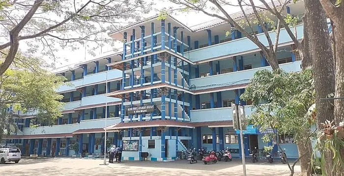

Penerimaan Peserta Didik Baru (PPDB) SMKS Brantas Karangkates

SMKS Brantas Karangkates secara resmi membuka Penerimaan Peserta Didik Baru (PPDB). Kami mengundang para lulusan SMP/MTs sederajat untuk bergabung bersama keluarga besar SMKS Brantas. Nikmati pengalaman belajar dengan kurikulum berbasis industri, fasilitas lab/bengkel praktik berstandar dunia usaha, serta peluang kerja terjamin melalui jaringan Bursa Kerja Khusus (BKK).